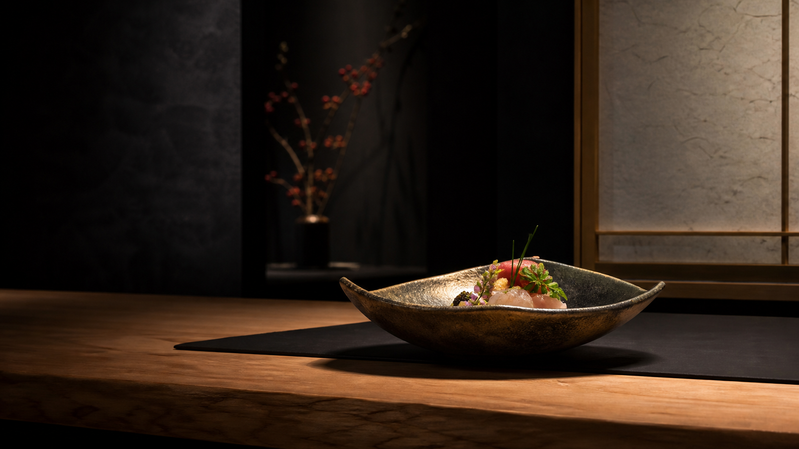

CONCEPT
その日の朝に届いた食材だけで、その日の献立を組みます。だから同じ夜は、二度とありません。カウンター越しに、季節の移ろいと、職人の手の動きを間近で。器の温度、出汁の香り、間の取り方まで。ひと皿ごとに流れる時間そのものを、味わっていただく場所です。
記念日に、接待に、そして自分へのご褒美に。その夜が、長く記憶に残るように。
FOR SUCH A NIGHT
ひとつでも当てはまるなら、一度、席をご用意させてください。
OUR REASON
其の一
市場と生産者から届く旬の食材を、その日のうちに。決まったメニューをなぞるのではなく、素材が一番おいしい瞬間に合わせて献立を組みます。
其の二
職人の手元を間近に、料理が生まれる瞬間を味わっていただけます。静かに、しかし心のこもった応対で、あなたの夜に寄り添います。
其の三
大切な会食のために、完全個室もご用意しております。お相手の苦手な食材、記念日の演出など、事前にご相談ください。
OMAKASE
花
季節の味を気軽に。はじめての方や、軽めにお楽しみになりたい夜へ。
全8品 ¥11,000
月
当店の定番。旬の魅力をひと通り味わえる、贅沢なおまかせ。
全11品 ¥16,500
雪
特別な夜のための最上のお献立。厳選した食材を、心ゆくまで。
全14品 ¥24,000
RESERVATION FLOW
ネットまたはお電話で。ご希望の日時と人数をお伝えください。
苦手な食材、アレルギー、記念日の演出などを事前に伺います。
おしぼりと一杯から。その日の献立とともに、ごゆっくり。
余韻を大切に。次の季節にも、またお待ちしております。
OUR NUMBERS
※ここに入る数字は架空のサンプルです。実際は、確認できた事実の数字だけを入れます。
VOICE
大事な接待で使わせていただきました。個室の落ち着きと、苦手な食材への気配りが行き届いていて、相手にも大変喜ばれました。料理はもちろん、間の取り方まで美しく、また使わせていただきます。
50代・男性 個室・月コース
記念日に伺いました。カウンターで料理ができあがっていく様子を見ているだけで、特別な時間でした。旬のものを丁寧に、という言葉の意味が、食べて初めて分かりました。
30代・女性 雪コース
※お客様の声も架空のサンプルです。実際は、許可をいただいた本物の声だけを掲載します。
Q & A
席数に限りがございますので、ご予約をおすすめしております。記念日や接待など、特別なご要望も、どうぞお気軽にご相談ください。あなたの大切な夜を、心を込めてお迎えします。
おまかせコース ¥11,000〜（税込・要予約）
お席を予約する →